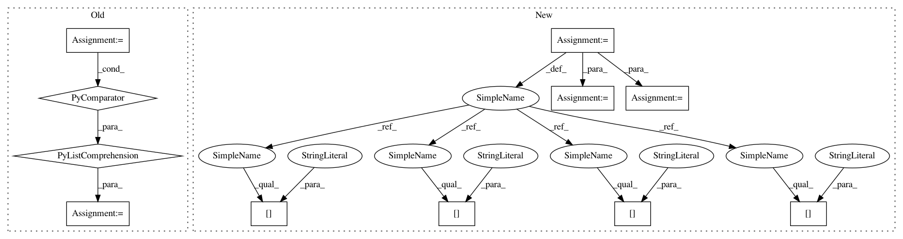

62f48ef99493944ee04bd7598bc8ce0cc5fded7b,chainerrl/agents/pgt.py,PGT,update,#PGT#Any#Any#,140
Before Change
batch_size = len(experiences)
// Store necessary data in arrays
batch_state = self.batch_states(
[elem["state"] for elem in experiences], self.xp, self.phi)
batch_actions = self.xp.asarray(
[elem["action"] for elem in experiences])
After Change
batch_size = len(experiences)
batch_exp = batch_experiences(
experiences,
xp=self.xp,
phi=self.phi,
gamma=self.gamma,
batch_states=self.batch_states,
)
batch_state = batch_exp["state"]
batch_actions = batch_exp["action"]
batch_next_state = batch_exp["next_state"]
batch_rewards = batch_exp["reward"]
batch_terminal = batch_exp["is_state_terminal"]
batch_discount = batch_exp["discount"]
// Update Q-function
def compute_critic_loss():
In pattern: SUPERPATTERN
Frequency: 3
Non-data size: 11
Instances
Project Name: chainer/chainerrl
Commit Name: 62f48ef99493944ee04bd7598bc8ce0cc5fded7b
Time: 2019-02-22
Author: muupan@gmail.com
File Name: chainerrl/agents/pgt.py
Class Name: PGT
Method Name: update
Project Name: chainer/chainerrl
Commit Name: 62f48ef99493944ee04bd7598bc8ce0cc5fded7b
Time: 2019-02-22
Author: muupan@gmail.com
File Name: chainerrl/agents/pgt.py
Class Name: PGT
Method Name: update
Project Name: has2k1/plotnine
Commit Name: 95c2a29c7f1992f78d11acfe9cdfee83a7516af2
Time: 2016-03-16
Author: has2k1@gmail.com
File Name: ggplot/geoms/geom_path.py
Class Name:
Method Name: _draw_segments
Project Name: etal/cnvkit
Commit Name: 60c1cdbe51f7257525fee54a360b32fb95e0beb9
Time: 2015-08-11
Author: eric.talevich@gmail.com
File Name: cnvlib/commands.py
Class Name:
Method Name: do_scatter